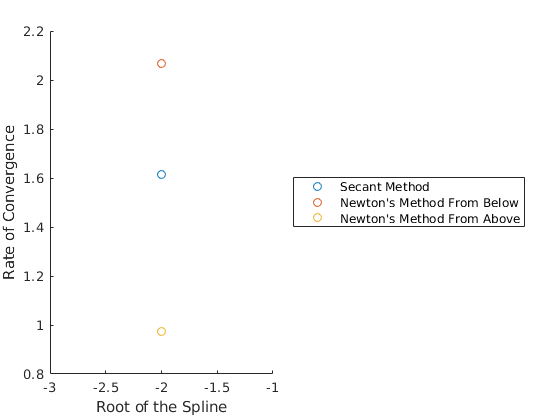

Zachary Kaplan
MATH 340 Assignment 8 3/22/18
Contents
Problem 1
f = @(x) exp(-x) .* cos(x); df = @(x) -exp(-x) .* (cos(x) + sin(x)); a = -4; b = 5; % Approximate f chebf = cheb(a, b, f, 200); % Evaluate on interval, take numerical derivative X = linspace(a, b, 1e5); Y = chebf(X); dfdx = gradient(Y) ./ gradient(X); DF = df(X); fprintf(['Relative L^{inf} norm : %e\n' ... 'Relative L^2 norm : %e\n'], ... norm(DF - dfdx, Inf)/norm(DF, Inf), ... norm(DF - dfdx, 2) / norm(DF, 2)); fprintf('\nFunctions used:\n'); dbtype cheb dbtype lpfit
Relative L^{inf} norm : 1.606966e-04
Relative L^2 norm : 1.389368e-06
Functions used:
1 function [p, points] = cheb(a, b, f, n)
2 % cheb uses chebyshev nodes for interpolating f with a degree n polynomial.
3
4 X = (a + b)/2 + (a - b)/2 * cos((2*(1:n+1) - 1)./(2*n + 2) * pi);
5 Y = f(X);
6
7 % Always using Lagrange Basis Functions now.
8 p = lpfit(X, Y);
9
10 points = [X' Y'];
11 end
1 function Pn = lpfit(X, Y)
2 % pfit finds the polynomial fitting points defined by the cocentric vectors
3 % X and Y. NB: X and Y must have the same length.
4
5 % Force X to be a row vec.
6 X = reshape(X, 1, length(X));
7 % Force Y to be a row vec.
8 Y = reshape(Y, 1, length(Y));
9
10 function y = pn(x)
11 y = 0;
12 for i = 1:length(X)
13 % The i'th column of y is Li evaluated on each input x.
14 y = y + Y(i)*lagrange(x, i, X);
15 end
16 y = reshape(y, size(x));
17 end
18
19 Pn = @pn;
20 end
21
22 function y = lagrange(x, i, X)
23 % lagrange returns the ith Lagrange function from the length(X) - 1 order
24 % Lagrange basis as defined by vector X evaluated at x
25 % NB: X must be a row vector.
26 % returns y as a column vector.
27
28 % Force x to be a col vec.
29 x = reshape(x, length(x), 1);
30
31 % \Pi_{j = 1, j \not= i}^{|X|} (x - X_j)/(X_i - X_j)
32 skip = [X(1:i-1) X(i+1:end)]; % skips X(i)
33 % The below uses matlab R2017's ability to automatically repmat matrix
34 % arguments to binary matrix operators. MAY NOT WORK IN R2016.
35 y = prod((x - skip)./(X(i) - skip), 2); % Product along column dimension
36 end
Problem 2
f = @(x) exp(-x) .* cos(x); % NOTE: The additional 1/2 was chosen so that the integral was based at 0, % since e^{-x}(sin(x) - cos(x)) is -1/2 at a. F = @(x) (exp(-x) .* (sin(x) - cos(x)) + 1) ./ 2; a = 0; b = 12*pi; % Approximate f chebf = cheb(a, b, f, 200); % Evaluate on interval, take numerical integral. X = linspace(a, b, 1e5); Y = chebf(X); FN = cumtrapz(X, Y); FA = F(X); fprintf(['Relative L^{inf} norm : %e\n' ... 'Relative L^2 norm : %e\n'], ... norm(FN - FA, Inf)/norm(FA, Inf), ... norm(FN - FA, 2) / norm(FA, 2)); fprintf('\nAbsolute error at b = 12pi: %e\n', abs(FN(end) - FA(end))); fprintf('\nFunctions used:\n'); dbtype cheb dbtype lpfit
Relative L^{inf} norm : 2.045830e-08
Relative L^2 norm : 2.321465e-08
Absolute error at b = 12pi: 1.184371e-08
Functions used:
1 function [p, points] = cheb(a, b, f, n)
2 % cheb uses chebyshev nodes for interpolating f with a degree n polynomial.
3
4 X = (a + b)/2 + (a - b)/2 * cos((2*(1:n+1) - 1)./(2*n + 2) * pi);
5 Y = f(X);
6
7 % Always using Lagrange Basis Functions now.
8 p = lpfit(X, Y);
9
10 points = [X' Y'];
11 end
1 function Pn = lpfit(X, Y)
2 % pfit finds the polynomial fitting points defined by the cocentric vectors
3 % X and Y. NB: X and Y must have the same length.
4
5 % Force X to be a row vec.
6 X = reshape(X, 1, length(X));
7 % Force Y to be a row vec.
8 Y = reshape(Y, 1, length(Y));
9
10 function y = pn(x)
11 y = 0;
12 for i = 1:length(X)
13 % The i'th column of y is Li evaluated on each input x.
14 y = y + Y(i)*lagrange(x, i, X);
15 end
16 y = reshape(y, size(x));
17 end
18
19 Pn = @pn;
20 end
21
22 function y = lagrange(x, i, X)
23 % lagrange returns the ith Lagrange function from the length(X) - 1 order
24 % Lagrange basis as defined by vector X evaluated at x
25 % NB: X must be a row vector.
26 % returns y as a column vector.
27
28 % Force x to be a col vec.
29 x = reshape(x, length(x), 1);
30
31 % \Pi_{j = 1, j \not= i}^{|X|} (x - X_j)/(X_i - X_j)
32 skip = [X(1:i-1) X(i+1:end)]; % skips X(i)
33 % The below uses matlab R2017's ability to automatically repmat matrix
34 % arguments to binary matrix operators. MAY NOT WORK IN R2016.
35 y = prod((x - skip)./(X(i) - skip), 2); % Product along column dimension
36 end
Extra Credit
% Get X and Y values from data file. load data.mat [X, Y] = deal(data(1, :), data(2, :)); [a, b] = deal(-7, 7); delta = (b - a) * 1e-2; % Default delta deviating from true value of root. tol = 1e-12; % Tolerance for numerical root finding. % Calculate the spline piecewise polynomial pp = spline(X, Y); % Finds all roots of the spline (in sorted order). r = pproots(pp); dr = diff(r); % Require that delta is smaller than the minimum distance between roots. if not(isempty(dr)) if delta > min(dr) delta = min(dr) / 2; end end % Allocate storage for convergence of numerical methods. % Secent method using [r - delta, r + delta]. secent_order = zeros(size(r)); % Newtons method starting at r - delta. newton_order_neg = zeros(size(r)); % Newtons method starting at r + delta. newton_order_pos = zeros(size(r)); % Approximate each root with secant and newtons method. for i = 1:length(r) root = r(i); % SECANT METHOD: x0 = max(a, root - delta); x1 = min(b, root + delta); [est, err, secent_order(i)] = secant(@(x) ppval(pp, x), x0, x1, tol); if abs(est - root) > err error('Secent method failed to converge to root %f\n', root); end % NEWTON METHOD: % Exact derivative of spline. dpp = fnder(pp); % From Below. [est, err, newton_order_neg(i)] = ... newtons(@(x) ppval(pp, x), @(x) ppval(dpp, x), x0, tol); if abs(est - root) > err error(['Newton''s method failed to converge to root %f' ... 'from below\n'], root); end % From Above. [est, err, newton_order_pos(i)] = ... newtons(@(x) ppval(pp, x), @(x) ppval(dpp, x), x1, tol); if abs(est - root) > err error(['Newton''s method failed to converge to root %f' ... 'from above\n'], root); end end figure hold on scatter(r, secent_order); scatter(r, newton_order_neg); scatter(r, newton_order_pos); xlabel('Root of the Spline'); ylabel('Rate of Convergence'); legend('Secant Method', 'Newton''s Method From Below', ... 'Newton''s Method From Above', 'Location', 'eastoutside'); fprintf(['By inspection of the above, Newton''s method from the ' ... 'positive side of -2 converges at a rate of ~1,\nwhich is ' ... 'unusual compared to the expected Newton rate of convergence ' ... 'of 2.\n']); fprintf('\nFunctions Used:\n'); dbtype pproots dbtype secant dbtype newtons
By inspection of the above, Newton's method from the positive side of -2 converges at a rate of ~1,
which is unusual compared to the expected Newton rate of convergence of 2.
Functions Used:
1 function r = pproots(pp)
2
3 % Unpack information about the pieces of pp.
4 [breaks, coefs, L, k, ~] = unmkpp(pp);
5
6 % Allocate space for roots. There can be at most `k - 1` roots per
7 % subinterval, and there are `L` subintervals.
8 r = nan((k - 1) * L, 1);
9 ridx = 1; % Current index into r.
10
11 % For the ith subinterval, find all the roots and add them.
12 for i = 1:L
13 % Poly roots for a given piece of the spline, shifted by leftmost point
14 % of subinterval.
15 proots = roots(coefs(i, :)) + breaks(i);
16 % Only add the roots that are real and in the interval.
17 for proot = proots'
18 if isreal(proot) && proot >= breaks(i) && proot <= breaks(i + 1)
19 r(ridx) = proot;
20 ridx = ridx + 1;
21 end
22 end
23 end
24
25 % Remove excess NaN values from r.
26 r(ridx:end) = [];
27 % Remove duplicates from r (also sorts r).
28 r = unique(r);
29 end
1 function [estimate, err, order] = secant(f, x0, x1, tol)
2 a = x0;
3 b = x1;
4 err = f(b)*(b - a)/(f(b) - f(a));
5
6 prev1_err = inf;
7 prev2_err = inf;
8
9 while abs(err) > tol
10 a = b;
11 b = b - err;
12 prev2_err = prev1_err;
13 prev1_err = err;
14 err = f(b)*(b - a)/(f(b) - f(a));
15 end
16
17 % Easily derived from the relation e_n = C|e_{n-1}|^p and
18 % e_{n-1} = C|e_{n-2}|^p.
19 order = log(abs(err/prev1_err))/log(abs(prev1_err/prev2_err));
20
21 estimate = b;
22 end
1 function [estimate, err, order] = newtons(f, df, x0, tol)
2
3 prev1_err = inf;
4 prev2_err = inf;
5
6 estimate = x0;
7 err = f(estimate)/double(df(estimate));
8
9 while abs(err) > tol
10 estimate = estimate - err;
11 prev2_err = prev1_err;
12 prev1_err = err;
13 err = f(estimate)/double(df(estimate));
14 end
15
16 % Easily derived from the relation e_n = C|e_n-1|^p and
17 % e_n-1 = C|e_n-2|^p.
18 order = log(abs(err/prev1_err))/log(abs(prev1_err/prev2_err));
19
20 err = abs(err);
21 end
